Suporte &
infraestrutura
Suporte N2/N3 presencial e remoto, administração de usuários e infraestrutura de TI em obras e operações corporativas.
Atuo com suporte técnico, infraestrutura, gestão de ativos e automação de processos. Transformo necessidades do dia a dia em soluções, unindo experiência com pessoas e formação em Gestão de TI.
Conheça minha trajetória01 / COMO EU ATUO
Minha experiência une a resolução de problemas técnicos ao cuidado com processos, recursos e pessoas.
Suporte N2/N3 presencial e remoto, administração de usuários e infraestrutura de TI em obras e operações corporativas.
Inventário de TI, gestão documental no SharePoint e automação de rotinas com Power Automate para organizar recursos e melhorar processos.
Minha experiência com vendas, marketing e treinamento de equipes fortalece a comunicação, a escuta e o atendimento às pessoas na rotina de TI.
02 / MEU PERFIL
Minha trajetória profissional começou na área comercial, com vendas, marketing, treinamento de equipes e meu próprio negócio. Essas experiências me ensinaram sobre pessoas, comunicação, responsabilidade e como lidar com desafios.
A tecnologia sempre foi uma paixão. Depois de encerrar meu negócio durante a pandemia, decidi seguir esse antigo sonho e comecei minha graduação em Gestão da Tecnologia da Informação.
Foi assim que surgiu minha oportunidade na MJRE: comecei como estagiária e, após cinco meses, fui efetivada. Concluí minha graduação enquanto trabalhava e hoje sigo crescendo na área, aprendendo, criando soluções e ajudando pessoas por meio da tecnologia.
Busco fazer parte de uma empresa que valorize inovação, criatividade e evolução contínua. Quero contribuir com ideias, desenvolver soluções e implementar melhorias, em um ambiente de aprendizado e troca de conhecimentos.
Início da minha trajetória na MJRE, com atuação nas mesmas frentes de suporte técnico, administração de usuários, sistemas corporativos, manutenção de equipamentos e infraestrutura de TI. Após cinco meses de estágio, fui efetivada como auxiliar técnico de TI.
Estácio · 2026
Na graduação, estudei gerenciamento de riscos, gestão de pessoas, infraestrutura e arquitetura de redes, engenharia de software, datacenter, análise e gerenciamento de dados, ITIL, Scrum, segurança da informação, Python, R, SQL, LGPD, suporte corporativo e processos tecnológicos.
Identificação de falhas, otimização de atividades, resolução de problemas, gestão da qualidade e desenvolvimento de soluções para aumento da eficiência e produtividade.
Planejamento, organização de equipes, gerenciamento de riscos, definição de metas, controle de prazos, metodologias ágeis como Scrum e boas práticas para execução de projetos tecnológicos.
Alinhamento da tecnologia aos objetivos da empresa, gestão de processos, segurança da informação, gerenciamento de riscos, conformidade e tomada de decisões estratégicas.
Pensamento crítico, identificação de necessidades, trabalho em equipe, planejamento de ações, impacto social e melhoria de processos e qualidade de vida.
Comunicação, resolução de problemas, gerenciamento de conflitos, aprendizado rápido e escuta ativa. Experiência com Microsoft 365, gerenciamento de nuvem com OneDrive, SharePoint, certificados digitais A1 e A3 e infraestrutura de rede em locais isolados.
03 / PROJETO PESSOAL
Idealizei e desenvolvi, ao longo de seis meses, um sistema de gestão de almoxarifado com funcionamento offline, pensado para manter as operações mesmo sem acesso à internet. Conduzi a definição das funcionalidades, os ajustes e a validação do sistema, com apoio do Codex na criação de códigos.
Python e SQL, com banco de dados PostgreSQL e integração via Psycopg. Interface para desktop desenvolvida em PySide6/Qt.
ReportLab para relatórios em PDF, OpenPyXL para planilhas Excel e Matplotlib para gráficos gerenciais.
Distribuição com PyInstaller e Inno Setup, reunindo a aplicação e sua instalação para uso no computador autorizado.
Controle de estoque, entradas e saídas, transferências, empréstimos e devoluções, orçamento, gestão de veículos e acompanhamento de perdas e avarias.
O sistema também reúne relatórios, CEN Assistente, controle de acesso, auditoria e backups, conectando os registros da operação à consulta e análise das informações.
POR DENTRO DO PROJETO
Selecionei cinco exemplos para mostrar como trabalhei a organização de informações, os processos e a consulta de dados. Cada captura pode ser ampliada.
Capturas da interface do CEN / FCdata. Os valores exibidos contextualizam as telas e não representam resultados de economia ou desempenho atribuídos ao projeto.
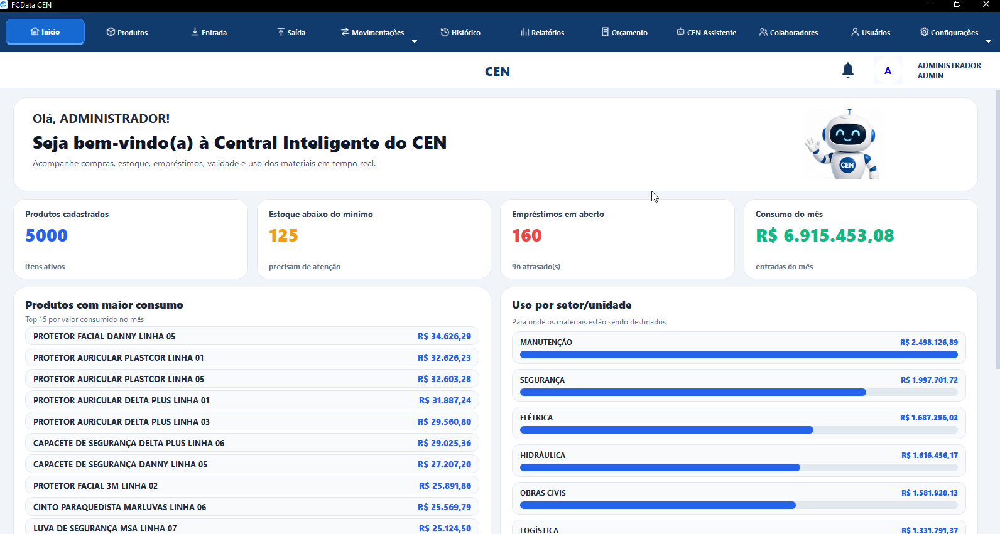
Ampliar tela ↗Organizei no painel indicadores de estoque, empréstimos e consumo, reunindo informações que precisam ser consultadas em conjunto. Esse exemplo mostra meu trabalho de seleção e apresentação de dados.
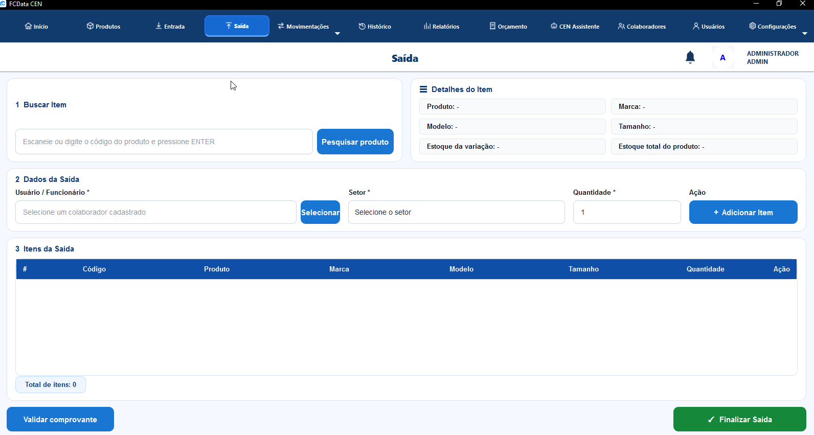
Ampliar tela ↗Estruturei a saída em etapas: localizar o produto, identificar colaborador e setor e conferir os itens. Esse fluxo mostra como traduzi um processo operacional em uma interface.
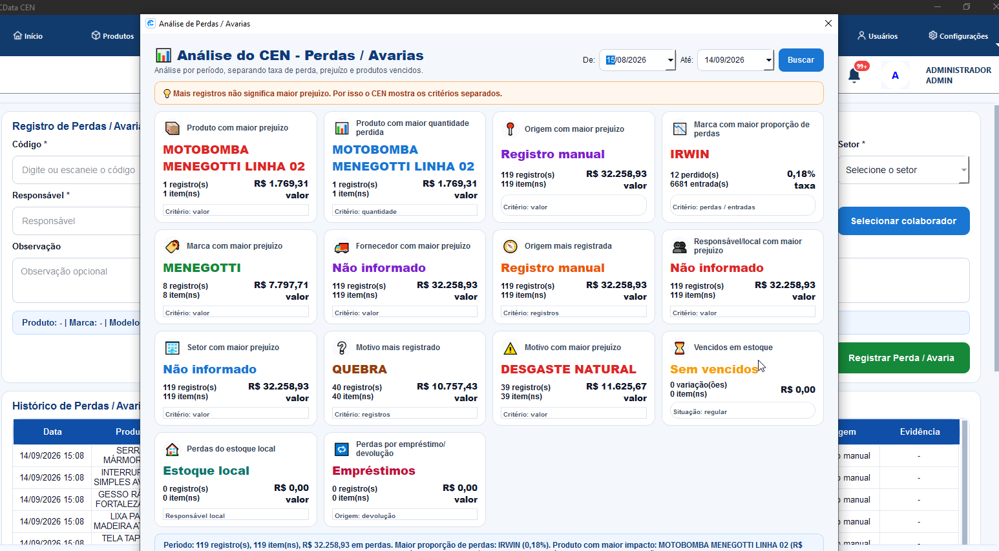
Ampliar tela ↗Separei frequência, quantidade, valor e proporção de perdas na análise. Essa escolha permite distinguir critérios diferentes, em vez de tratar quantidade de registros como sinônimo de prejuízo.
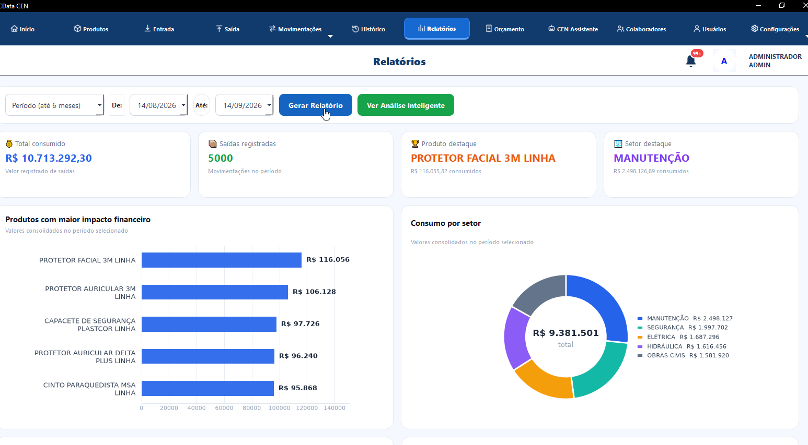
Ampliar tela ↗Desenvolvi filtros de período e gráficos de consumo por produto e setor. O objetivo foi tornar os registros mais fáceis de consultar e comparar.
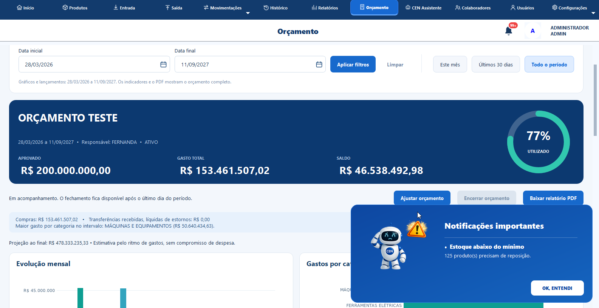
Ampliar tela ↗Implementei notificações a cada 30 minutos para destacar informações importantes do sistema durante o uso. Nesta captura, o aviso apresenta produtos com estoque abaixo do mínimo que precisam de reposição. Meu objetivo foi levar os pontos de atenção ao usuário, sem depender apenas da consulta ao painel.
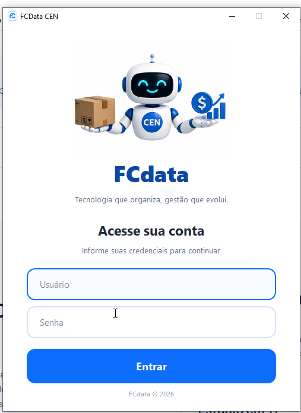
Ampliar tela ↗A tela de entrada reúne a identidade FCdata e os campos de usuário e senha para iniciar uma sessão no CEN.
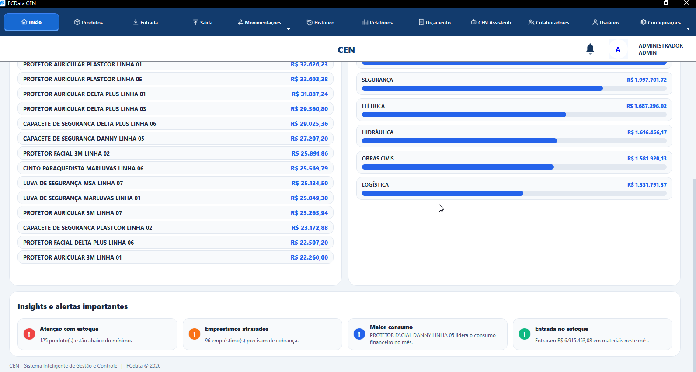
Ampliar tela ↗A continuação do painel apresenta alertas de estoque, empréstimos atrasados, maior consumo e entradas de materiais, aproximando os indicadores das ações do dia a dia.
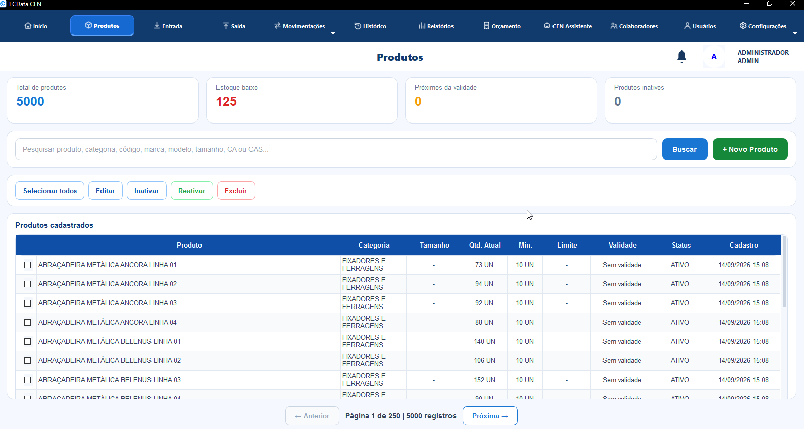
Ampliar tela ↗Pesquisa por características do item, acompanhamento de quantidades e validade e ações de cadastro, edição e inativação. A paginação organiza a consulta ao catálogo.
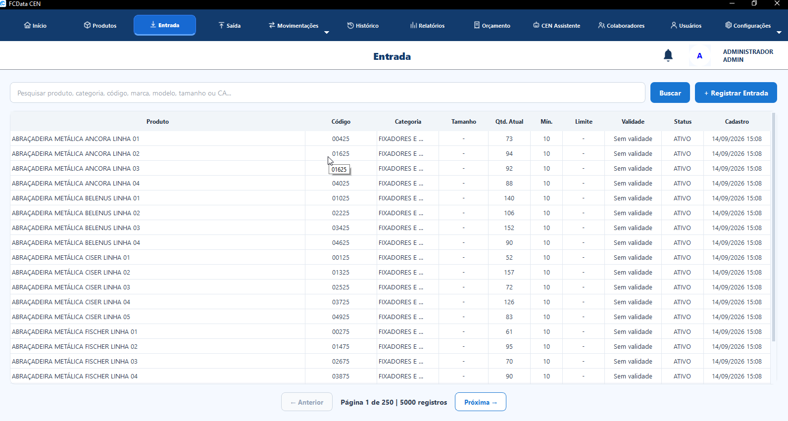
Ampliar tela ↗A consulta de produtos exibe códigos, categorias e saldos e oferece o registro de entradas, apoiando a atualização do estoque.
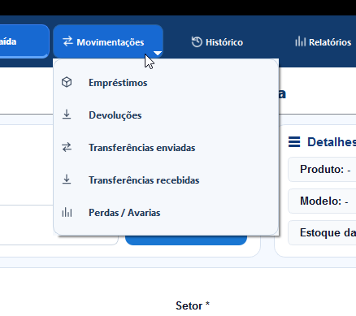
Ampliar tela ↗O menu reúne empréstimos, devoluções, transferências enviadas e recebidas e perdas ou avarias, distinguindo os diferentes caminhos dos materiais.
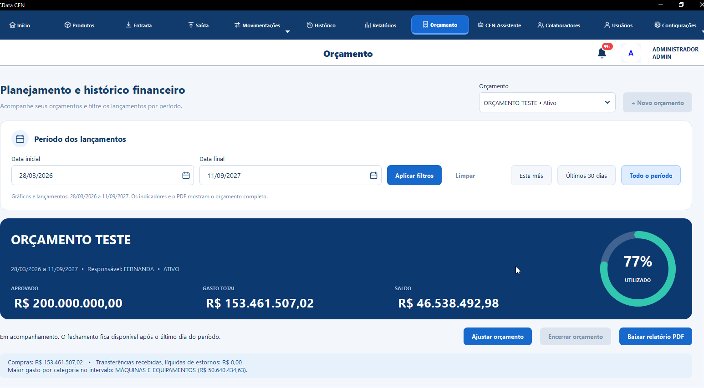
Ampliar tela ↗A tela de orçamento compara valor aprovado, gasto total e saldo, além de mostrar o percentual utilizado. Inclui filtros de período e opção de relatório em PDF.
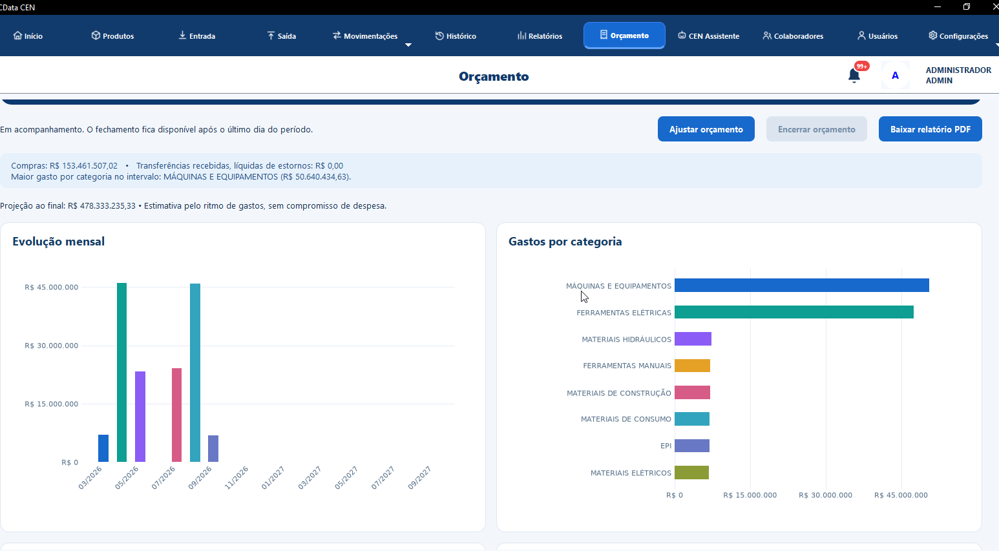
Ampliar tela ↗Gráficos organizam a evolução mensal e a distribuição dos gastos por categoria. A projeção é apresentada na interface como uma estimativa pelo ritmo de gastos.
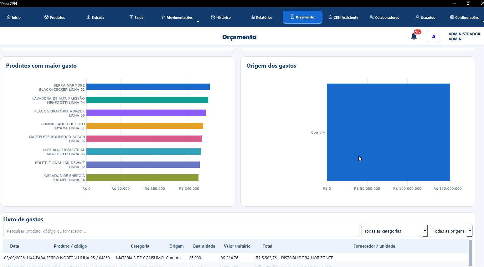
Ampliar tela ↗A visualização destaca produtos com maior gasto e a origem dos valores. O livro de gastos permite consultar lançamentos por produto, código, fornecedor e categoria.
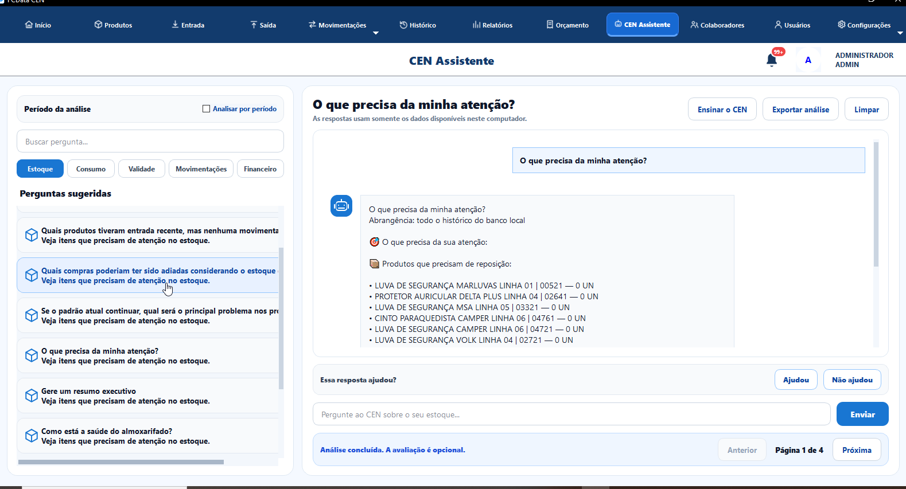
Ampliar tela ↗O assistente reúne perguntas sugeridas sobre estoque, consumo, validade, movimentações e finanças. A tela informa que as respostas usam os dados disponíveis no computador e permite exportar a análise.
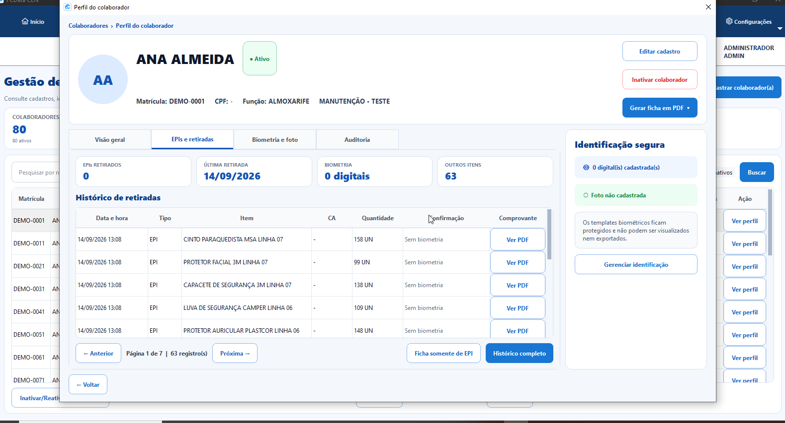
Ampliar tela ↗O perfil demonstrativo reúne dados cadastrais, retiradas de materiais, comprovantes e abas de identificação e auditoria. A captura mostra matrícula DEMO e nenhum registro biométrico cadastrado.
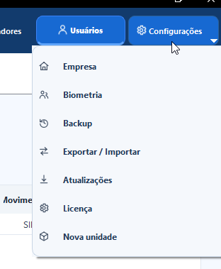
Ampliar tela ↗O menu de configurações concentra as áreas de empresa, biometria, backup, exportação e importação, atualizações, licença e nova unidade.
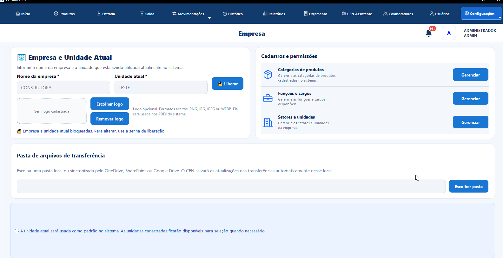
Ampliar tela ↗A configuração identifica a empresa e a unidade, organiza categorias, cargos e setores e permite escolher uma pasta para arquivos de transferência, local ou sincronizada.
04 / VAMOS CONVERSAR
Tenho interesse em oportunidades que conectem suporte, infraestrutura, gestão de TI e melhoria de processos.
Enviar um e-mailDuque de Caxias · Rio de Janeiro